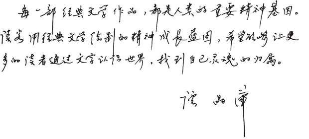

谭晶华
文学博士，教授，博士生导师。原上海外国语大学常务副校长，现任该校学术委员会主任。中国日本文学研究会会长、上海翻译家协会会长。出版众多著作、论文、辞典和教材、文学名著译作120多部(篇)， 350余万字。
黄宜思
中国政法大学教授，著名翻译家黄雨石之子。译有《罗马帝国衰亡史》《澡盆故事》《远航》《六便士之家》《罗马史》等。于2008年和2009年两度担任中国翻译协会主办的全国“韩素音青年翻译奖”竞赛评委。